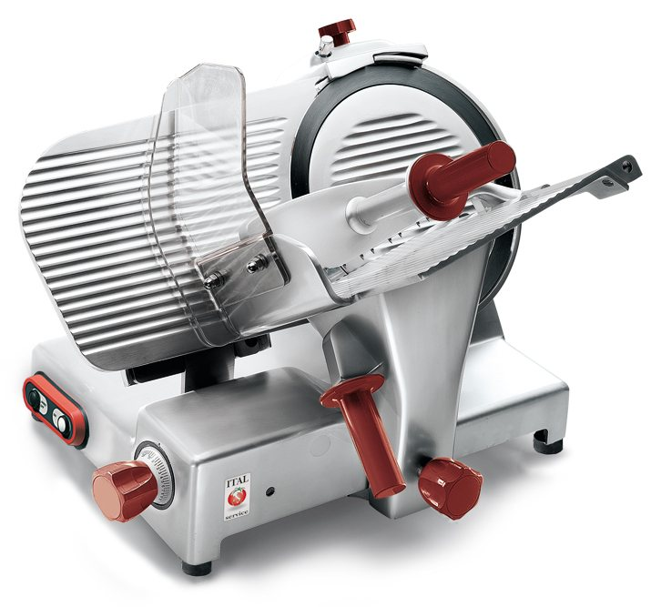

Macchine professionali per bar, pizzeria e cucina.
Produzione propria a Curtarolo (Padova) ed esclusiva per l'Italia di Samsung, Sanyo e Taurus. Scegli la macchina: ti diciamo prezzo e disponibilità.

Ø 300 mmlama, inclinata a 35°
0–30 mmspessore di taglio
35 kgpeso netto
- 6linee di prodotto, dal bar alla cucina d'albergo
- 77macchine a catalogo, ognuna con la sua scheda tecnica
- 3marchi in esclusiva per l'Italia: Samsung, Sanyo, Taurus
- 70luoghi d'Italia che danno il nome alle macchine
Il catalogo, linea per linea
Quasi ogni macchina Italservice porta il nome di un luogo d'Italia. Scegli la tua linea e guarda dove ti porta. Tocca una macchina per la scheda e il prezzo.
Ovunque, subito. Da Curtarolo a tutta Italia.
Linea Bar
Frullatori, frappè, spremiagrumi, rompighiaccio ed estrattori: tutto quello che lavora dietro al banco.
Quasi tutti portano nomi di Veneto e Dolomiti: Asolo, Asiago, Jesolo, Murano, Cortina, Marmolada.
Linea Pizzeria
Impastatrici a spirale, forni, stendipizza, grattugie, taglia mozzarella, pale e piani di lavoro.
Le impastatrici si chiamano Napoli, il forno Pozzuoli, lo stendipizza Pompei.
Linea Snack
Piastre, fornetti, friggitrici, cuocipasta, salamandre, tostiere e vetrine per lo snack bar.
Le piastre hanno i nomi dei vulcani: Etna, Vesuvio, Vulcano, Lipari. Le macchine per würstel quelli dei laghi: Iseo, Idro, Bracciano, Vico.
Albergo e ristorazione
Planetarie, cutter, mixer, tritacarne, macchine per pasta fresca, abbattitori e lavanderia per hotel e ristoranti.
Dalla Toscana alla Puglia: Pisa, Gubbio, Ischia, Fasano, Ostuni, Matera.
Affettatrici
Affettatrici inclinate e verticali, dalla lama da 220 a quella da 300 mm.
Tra Piemonte e Sardegna: Alba, Biella, Ivrea, Stresa, Arona, Olbia.
High Tech
Sottovuoto, cottura a bassa temperatura, sigillatrici, induzione e i microonde professionali Samsung e Sanyo.
Sottovuoto e cottura lenta parlano marchigiano: Jesi, Loreto, Fermo, Conero. L'induzione corre a Imola e Misano.
Ti serve tutto in un file? Scarica il catalogo 2023 in PDF, 141 pagine con tutte le schede tecniche.
In esclusiva per l'Italia
Accanto alla produzione propria, Italservice importa in esclusiva per l'Italia i microonde professionali Samsung e Sanyo e le macchine Taurus: Rowzer, Mycook e Roner Clip per la cottura a bassa temperatura. In Italia le trovi solo da noi.
Samsung
Sanyo
Taurus
Un solo interlocutore, dall'offerta all'assistenza
Da molti anni Italservice è la risposta concreta per i professionisti Horeca che cercano attrezzature affidabili, efficaci e facili da usare. Crediamo nel Made in Italy e nella tradizione manifatturiera del nostro Paese: alla linea di produzione propria affianchiamo una selezione di macchine importate in esclusiva.
Offerta
Ci racconti il tuo locale e quanto lavori. Ti proponiamo la macchina giusta, con un'offerta chiara.
Vendita
Lo stesso team segue l'ordine dall'inizio alla fine, in Italia e all'estero.
Assistenza tecnica
Dopo l'acquisto resti seguito: assistenza tecnica sulle macchine che vendiamo.
Chiedi prezzo e disponibilità
Scrivi cosa ti serve: rispondiamo con prezzo, tempi e la soluzione più adatta al tuo locale.